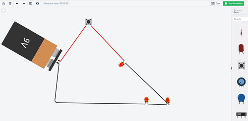

Do It! Tinkercad Circuits: Explore 3D Shapes and Volume
 The Challenge
The Challenge
Your challenge is to use Tinkercad Circuits to design and test circuits. Explore how different circuit parts affect how a circuit works. Then, use the Tinkercad 3D design tools to design a custom 3D object that lights up and houses an LED circuit assembly. The only three requirements for your design is that the circuit assembly fits inside the 3D object, there is an opening for light to shine from the object, and part of the object’s design includes a 3D prism. Finally, you will make two copies of your design: one larger and another larger still; you will do this so that you can use multiplication and addition to find the volume of the 3D prism in each copy of the design.
Project Steps
-
Build and Test Circuits
-
Combining Circuitry and 3D Design
-
Design a Light-Up 3D Object
-
Calculating Volume
Build and Test Circuits
Start by completing one or more circuit tutorials, then design and build your own circuits. Use the "Start Simulation" button to test your circuits. If the resistors in your circuit such as the light or motor do not work during the simulation, try moving components around.

Combining Circuitry and 3D Design
Now that you understand how to build circuits in Tinkercad, explore the Glow Circuit Assembly tutorial to learn how to combine 3D design with circuitry. This will help in the next activity.
Design a Light-Up 3D Object
This is your opportunity to design a custom light-up 3D object. If you have a 3D printer, you can even print the object and circuit assembly. There are only three requirements to this part of the challenge:
- The glow circuit assembly must fit inside the 3D object.
- There must be an opening for light to shine from the object.
- Part of the object’s design must include a 3D prism like a rectangular prism or a cube.
Steps to Get Started:
- Click on the Tinkercad logo to go back to your dashboard.
- Select the “3D Designs” button in the left hand menu.
- Select “Create new design” under “My recent designs”.
- Design your object. Remember to include a 3D prism like a rectangular prism or a cube in the design so that you can measure it and calculate the volume.
- Next you need to create a hollow cavity where you will insert the glow circuit assembly, like the one used in the Glow Circuit Assembly tutorial. You have two choices:
- In the right hand column, select “Assemblies” under “Circuits”. Select “Glow Cutout”, which is a hollow space sized for the glow circuit assembly.
- Instead of using the glow cutout, you can also create your own custom hollow space. In the right hand column, select “Basic Shapes” under “Tinkercad”. Choose one of the shapes at the top that are colored with gray diagonal lines. These are “holes” that you can resize and insert into solid shapes.
- In the right hand column, select “Assemblies” under “Circuits”. Select “Glow”, which is an assembly that includes an LED, battery, and base.
- Place the glow circuit assembly inside of the 3D object (inside the cutout or hollow space you created for this purpose).
- Once you have completed your design, make a copy. Group all parts of the design except for the glow circuit assembly and the glow cutout. Hold down the Shift key and enlarge the grouped parts of the design. (This ensures that the proportions of your design will remain as you resize it. The glow circuit assembly and the glow cutout will not resize, which is why you should not group them with the rest of the design.)
- If you have a 3D printer, export your design for printing using the “Export” button towards the top of the right hand column.
- Make another copy of your design and follow the same instructions as seen in the previous step. Enlarge your design even bigger than the previous copy. These two copies will be used for measuring volume and comparing volume in the next challenge.
Calculating Volume
Use the ruler tool in Tinkercad to measure the dimensions of the 3D prisms found in each of your three 3D objects.
- Select the ruler found at the top of the right hand column.
- Place the ruler towards the bottom left hand corner of your 3D object.
- Click on the 3D prism.
- You will see the measurements in millimeters. If you want measurements in inches, click on the “Edit Grid” button at the bottom right of the workplane. Under “Units” select “Inches”.
- Record the height, length, width, and your chosen unit of measurement.
- Multiply length × height × width to calculate the 3D prism’s volume.
- Follow steps 1-6 to measure and calculate the 3D prism volume for each of the enlarged copies of your design.
- Compare the volumes of the three shapes. How does the size of the shape change as the volume changes?